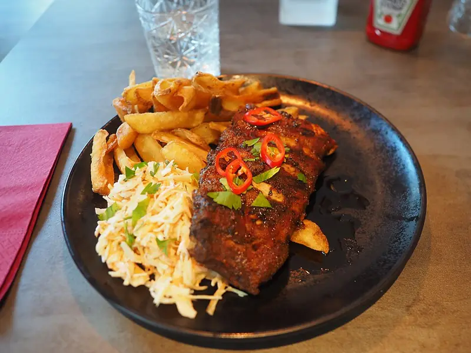

Фото: JIP, CC BY-SA 4.0

Мясо по-французски
Отбитая свинина под луком, помидорами и сырной корочкой
60 мин6 порц.615 ккал на порциюБ 31 · Ж 53 · У 4Русская кухня
Продукты на 6 порц.
- Свинина800 г
- Лук репчатый2 шт
- Помидоры по желанию2 шт
- Сыр твёрдый200 г
- Майонез120 г
- Растительное масло1 ст. л.
- Соль1 ч. л.
- Перец чёрный молотыйпо вкусу
Как готовить
- Свинину (шею или корейку) нарежьте поперёк волокон пластами толщиной 1,5 см.
- Накройте плёнкой и отбейте молотком до толщины 0,5-0,7 см. Посолите и поперчите с обеих сторон.
- Смажьте противень маслом и выложите мясо в один слой.
- Лук нарежьте тонкими полукольцами и распределите по мясу. Сверху положите кружки помидоров.
- Смажьте тонким слоем майонеза и посыпьте сыром, натёртым на крупной тёрке.
- Запекайте при 190 °C (средний жар) 35-40 минут, пока сыр не зарумянится, а мясо не станет мягким при проколе ножом.
Совет. Не отбивайте слишком тонко: мясо пересохнет. Сыр можно добавить за 15 минут до конца, тогда он не подгорит.